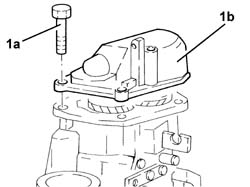
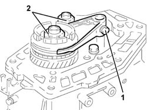
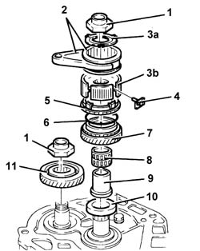
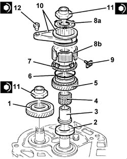
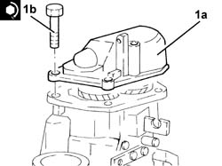

2110B42 5th speed gears of manual gearbox with differential - r+r with gearbox removed
- Path
- Procedures > 21 GEARBOX > 2110 MANUAL GEARBOX AND DIFFERENTIAL > 2110B manual gearbox with differential gears and synchronisers > 2110B42 5th speed gears of manual gearbox with differential - r+r with gearbox removed
- Kind
- repair procedure (removal / refitting; the operation number is the code)
- Applies to
- engines: 1.6 TS, 2.0 TS; all production periods
- Interactive page
- https://sloeber94.github.io/elrnDB-a147/en/#/3026026
Applies to: engines: 1.6 TS, 2.0 TS; all production periods
 Removing
Removing
 Refitting
Refitting1. Undo the bolts (1a) and remove the rear cover (1b).

Applies to: engines: 1.6 TS, 2.0 TS; all production periods
Engage any gear using the gear selector/engagement lever.
1. Undo the 5th speed selector fork bolt.
Engage 5th speed pressing the selector fork on the main shaft.
2. Remove the staking and loosen the ring nuts for the main and layshafts.

Applies to: engines: 1.6 TS, 2.0 TS; all production periods
1. Completely undo the ring nuts for the main and layshafts.
2. Remove the 5th speed selector fork complete with 5th speed sliding sleeve.
3. Remove the flange (3a) and the hub for the 5th speed sliding sleeve (3b).
4. Remove the pre-synchronizer mountings.
5. Remove the 5th speed synchronizer ring.
6. Remove the seal.
7. Remove the 5th speed drive gear.
8. Remove the needle bearing for the 5th speed drive gear.
9. Remove the 5th speed drive gear bush.
10. Remove the spacer.
11. Remove the 5th speed driven gear.

Applies to: engines: 1.6 TS, 2.0 TS; all production periods
Refitting
Removing1. Place the 5th speed driven gear back in its seating.
2. Place the spacer back in its housing.
3. Place the 5th speed drive gear bush back in its seating.
4. Place the 5th speed drive gear needle bearing back in its seating.
5. Place the 5th speed drive gear back in its seating.
6. Place the seal back in its housing.
7. Place the 5the speed synchronizer ring back in its seating.
8. Place the pre-synchronizer mountings back in their housings.
9. Place the flange (9a) and the hub for the 5th speed sliding sleeve (9b) back in their housings.
10. Place the 5th speed selector fork complete with 5th speed sliding sleeve back in its housing.
11. Tighten the new main shaft and layshaft ring nuts to the specified torque.
 | Fastening | Component | Ø | Value (daNm) |
|---|---|---|---|---|
11 | Ring nut | GEAR SHAFTS | M20 | 10.6 ÷ 13.0 |
12. Tighten the 5th speed selector fork bolt to the specified torque.
| Fastening | Component | Ø | Value (daNm) |
|---|---|---|---|---|
12 | Bolt | 5thª speed selector fork | M6 | 1.6 ÷ 2.0 |

Applies to: engines: 1.6 TS, 2.0 TS; all production periods
Apply the recommended sealant to the contact surfaces between the main and layshaft rear bearing retaining plate and the rear cover.
 | Type | Component | Name | Qty. |
|---|---|---|---|---|
- | Sealant | GEARBOX SEALS/GASKETS | Loctite 573 | - |
1. Place the rear cover (1a) back in its housing and fix it tightening the bolts (1b) to the recommended torque.
| Fastening | Component | Ø | Value (daNm) |
|---|---|---|---|---|
1b | Bolt | GEARBOX REAR COVER | M8 | 2.3 ÷ 2.8 |
